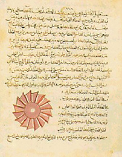

1300

Der arabische Schriftsteller Al-Jazari schrieb ein Buch über Automaten: “Buch des Wissens von sinnreichen mechanischen Vorrichtungen”. Darin ist ein Automat, der ein Wasserbecken füllen und leeren kann. Um 1300 schrieb der span. Theologe Ramon Lullus die “Ars Magna”. In diesem Buch stellte er eine Vielzahl an Techniken dar, die das Ziel haben, eine Methode zu entwickeln, die alle Wahrheiten überhaupt finden sollte. Es ging darum, ein mechanisches Verfahren zu entwickeln, das logische Schlüsse ziehen kann. Eine dieser Ideen war eine Maschine mit konzentrischen Scheiben, aus den Symbolen und Wörtern wurden durch Bewegung Sätze erzeugt.
- Markdown-It - markdown converter for Node.js
- Infoterminal Github - demo code and resorces